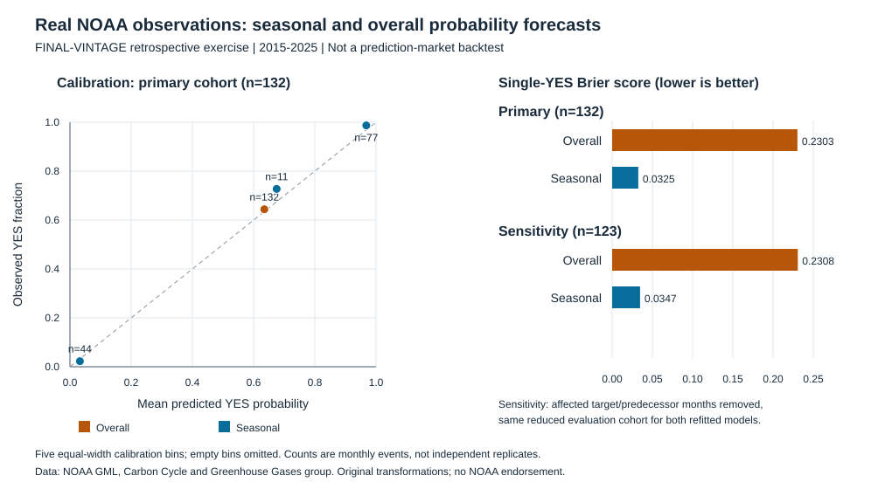

Real NOAA data: a frozen probability-forecasting study¶
Retrospective FINAL-VINTAGE teaching exercise, not a prediction-market backtest, an issued-forecast archive, or profitability evidence.
The question is whether a target-calendar-month event rate improves on an expanding overall rate when forecasting whether the recorded monthly CO2 mean is strictly greater than the immediately preceding calendar month's mean. Ties are NO. Both means are needed to define the eventual outcome; neither mean is used as a predictor. Models use only calendar information and labels already admitted under the hypothetical clock below.
The real data are attributed NOAA GML measurements. See the data attribution and schema, provenance, and research feasibility assessment. No source-book code or text is used.
Reproduce offline¶
Run these PowerShell commands from the companion project root,
book\companion, after the documented installation. The study reuses
prediction_market_lab.scoring.brier_score, log_loss, and calibration_bins.
It adds no dependencies or environment changes.
.\.venv\Scripts\python.exe experiments\noaa_study.py
.\.venv\Scripts\python.exe -m unittest tests.test_noaa_study -v
The default study command makes no network request and no file writes. It validates the CSV and provenance, verifies frozen data/protocol/implementation/ shared-scoring hashes, recomputes predictions and summaries, and compares the exact bytes with the existing outputs. Missing data, changed inputs/results, schema errors, or insufficient training history fail explicitly. There is no synthetic fallback.
The script's public CLI is deliberately small:
Acquisition and first freeze: commands actually used¶
The protocol was written before acquisition or inspecting either model's
scores, at 2026-09-10T21:45:25Z. This is a local predeclaration, not an
external preregistration. The first acquisition and first evaluation used:
.\.venv\Scripts\python.exe experiments\noaa_study.py --refresh-data
.\.venv\Scripts\python.exe -m unittest tests.test_noaa_study.NOAAParserTests tests.test_noaa_study.NOAAClockTests tests.test_noaa_study.NOAAAcquisitionTests -v
.\.venv\Scripts\python.exe experiments\noaa_study.py --freeze-results
The explicit acquisition contacts only the fixed public NOAA HTTPS URL. It rejects redirects, non-200 responses, malformed content, and responses over 2,000,000 bytes; network operations use a 30-second socket timeout. It hashes the raw response in memory and writes only the selected 1975-2025 observations and provenance. It does not evaluate scores or replace frozen results.
Acquisition completed at 2026-09-10T21:48:07Z. The source's exact original
creation string was Sat Sep 5 03:55:38 2026, with no specified timezone.
The first and single frozen evaluation was persisted at
2026-09-10T21:49:19Z.
On this shipped checkout, acquisition or freezing without replacement flags refuses to overwrite existing artifacts. To deliberately replace a dataset or reviewed evaluation, the distinct explicit opt-ins are:
# Maintenance only: these are NOT the reproduction commands.
.\.venv\Scripts\python.exe experiments\noaa_study.py --refresh-data --replace-data
.\.venv\Scripts\python.exe experiments\noaa_study.py --freeze-results --replace-results
These flags do not alter protocol.json. A refreshed source may have revisions;
existing frozen results will then fail verification until explicitly replaced.
Do not use replacement to select favorable results. Preserve the prior tracked
artifacts in version history before intentional maintenance. The shipped
frozen-data regression test pins the original extract hash; replacing a
changed extract intentionally requires reviewing that test and all quoted
book results. Parameter changes require a new reviewed protocol/implementation,
not silently editing version 1. Exact-byte verification is intentionally strict:
even a reviewed scoring implementation change requires inspecting and explicitly
accepting a replacement run.
Scoped .gitattributes rules disable Git line-ending normalization for hashed
study/data artifacts and the shared scoring.py. The initial source files
include CRLF endings while generated data use LF; forcing all files to LF would
change the frozen hashes on a new checkout. Preserving the original bytes avoids
that change without rewriting the protocol or rerunning a selected evaluation.
A formatting-only change still trips the explicit implementation-review gate.
The Git-filter regression locates the actual Git checkout root independently
of this nested Python project, so it checks the same byte-preserving attributes
whether the companion is nested or checked out on its own.
Predeclared protocol¶
protocol.json is the authoritative design. Its SHA-256 is
3ce89596a3bfa3fa12a2b30f116f473fc000a827623b4011839fd3d33f5f5e71.
- Source window: January 1975-December 2025, 612 calendar records.
- Evaluation: January 2015-December 2025, fixed before scores; expanding training rather than a model fitted once and left unchanged.
- Valid event: two truly consecutive, valid calendar-month observations. No shifting across deleted rows; no interpolation.
- Clock: the label for target month
sis admitted at 00:00 UTC on the first day of months+2. A forecast at the start of target monthtuses target labels no later thant-2. Thus the January 2015 forecast can use labels through November 2014; December 2014 is not yet admitted. - Initial history: 1975-2014 records provide 475 pre-evaluation events, of which 474 are admitted for January 2015. At least 36 admitted labels are required for every forecast; failure is an error, not silently dropping an evaluation month. Later evaluation labels enter training only after their hypothetical admission dates.
- Overall baseline: add one to the admitted YES count and divide by the admitted count plus two, the Beta(1,1) posterior predictive mean.
- Seasonal model: use the same smoothing but only admitted labels with the target's calendar month. The month is the target month, not the prior observation's month. No pooling or tuning.
- Forbidden inputs: contemporaneous/target CO2 levels, deseasonalized values, labels not yet admitted, and transformations fitted after cutoff.
- Scoring: one equally weighted squared YES-probability error per event for Brier score; natural-log loss. No endpoint clipping. Wrong zero-probability forecasts have infinite log loss in the core; Beta smoothing keeps these particular forecasts strictly inside zero and one.
- Difference: seasonal score minus overall score; negative favors seasonal.
- Inference: descriptive scores and fixed five-bin calibration summaries, no p-values or confidence intervals. Eleven years of dependent monthly events do not justify an independent-row uncertainty claim.
The clock is an explicitly hypothetical retrospective index convention, not evidence of actual historical publication or local observation times. The final-vintage data limitation is not fixed by lagging labels.
Actual exclusions and counts¶
The extract has 612 calendar rows, 610 valid source records, and 607 usable target events across all years. Five calendar targets are excluded:
| Target | Reason |
|---|---|
| January 1975 | No December 1974 predecessor in the conservative extract |
| December 1975 | Target source record: nonpositive days and negative standard deviation |
| January 1976 | Previous source record has those flags |
| April 1984 | Target source record: negative standard deviation |
| May 1984 | Previous source record has that flag |
None of these exclusions falls in the primary evaluation. It contains 132 monthly events, twelve in each of eleven years, with 85 YES outcomes (rate 0.643939394). The overall admitted-label count ranges from 474 to 605; the seasonal model has 38-50 same-calendar-month admitted labels per forecast.
The sensitivity conservatively excludes full December 2022-July 2023 source months affected by alternate measurement location. Every event depending on an affected target or predecessor is removed from both training and evaluation. This excludes December 2022-August 2023 targets, nine events, leaving 123 evaluation events with 79 YES outcomes (rate 0.642276423). August is excluded because its July predecessor is affected; September remains eligible. The reduced cohort has eleven 2022 events and four 2023 events, with twelve in each other evaluation year. Both models are refitted using the same remaining admitted labels and scored on this same reduced cohort.
Frozen results¶
Lower is better for both scores. All numbers below are descriptive and rounded for display; the report and prediction files retain full floating-point values.
| Cohort | Model | Events | Single-YES Brier | Natural-log loss |
|---|---|---|---|---|
| Primary | Overall Beta(1,1) | 132 | 0.230313524 | 0.653345440 |
| Primary | Target-month Beta(1,1) | 132 | 0.032459388 | 0.130672065 |
| Primary | Paired seasonal minus overall | 132 | -0.197854136 | -0.522673376 |
| Sensitivity, refitted | Overall Beta(1,1) | 123 | 0.230757404 | 0.654255460 |
| Sensitivity, refitted | Target-month Beta(1,1) | 123 | 0.034708546 | 0.137639909 |
| Sensitivity, refitted | Paired seasonal minus overall | 123 | -0.196048858 | -0.516615551 |
| Cohort | Overall probability range | Seasonal probability range |
|---|---|---|
| Primary | 0.630472855-0.639622642 | 0.019230769-0.980769231 |
| Sensitivity, refitted | 0.630017452-0.639622642 | 0.019230769-0.980769231 |
To separate removal of events from refitting effects, the predeclared report also scores the original primary forecasts on the same 123-event sensitivity cohort. On that matched cohort, without refitting, overall/seasonal Brier scores are 0.230747205 / 0.034717811, and log losses are 0.654233669 / 0.137703440. Those are a cohort diagnostic, not an additional model selected after evaluation.

The original SVG uses the verified report, not a second fit or evaluation selection. Nonempty calibration bins show their monthly event counts. It can be regenerated offline with the standard library; no plotting dependency was added:
This separate rendering command writes the SVG asset; the default study command continues to write nothing. The figure is descriptive and has no uncertainty bands. Source data, modeling transformations, and the no-endorsement boundary remain labeled.
The simple seasonal model has lower scores in this frozen descriptive comparison. Recurring seasonality is useful for this particular recorded-rise target. That observation does not show that either probability is calibrated in another domain, beats market prices, or can support a profitable trade.
Files, row schema, and verification¶
| File | Role |
|---|---|
noaa_study.py |
Explicit acquisition; parsing/validation; hypothetical clock; shared-core scoring; frozen verification |
protocol.json |
Versioned predeclaration, never rewritten by the CLI |
../data/real/noaa_co2_monthly_1975_2025.csv |
Filtered, attributed real observations including flags |
../data/real/provenance.json |
Actual retrieval and source metadata, schema, hashes, counts |
results/predictions.csv |
Exactly one primary forecast row per usable evaluation month |
results/sensitivity_predictions.csv |
Exactly one refitted sensitivity row per comparable month |
results/report.json |
Counts, exclusions, model definitions, scores, probability ranges, fixed-bin calibration, matched-cohort diagnostic, limitations |
results/frozen_run.json |
Actual freeze time and input/output hash bindings |
render_noaa_figure.py |
Standard-library rendering of a verified report; no additional fitting |
assets/noaa_calibration_scores.svg |
Original accessible SVG, not a NOAA-produced or endorsed figure |
../tests/test_noaa_study.py |
Stdlib unittest checks, including a real offline subprocess invocation |
{kind=link}
Prediction CSV columns identify target/previous months, UTC hypothetical forecast/label-admission timestamps, eventual binary label, training cutoff, latest admitted target, overall and seasonal training/YES counts, both probabilities, both per-event Brier/log losses, and per-event paired differences. Each event is present once within its cohort; repeated monthly snapshots are not counted as independent observations.
Tests verify gaps and ties, flags independently, invalid dates, duplicates and
ordering, exact eight-field schemas, finite values, response limits/errors,
admission at s+2, invariance to changing unadmitted/future labels, explicit
insufficient-history errors, frozen hashes/counts, shared score agreement,
replacement gates, tampered inputs/results, and actual offline reproduction
without network or writes. The small hand-constructed records in unit tests
test edge cases; they are not used in the empirical results.
What this study cannot establish¶
- Point-in-time validity: the source is a mutable current/final-vintage
series, not a historical release archive. Revisions and provider processing
can affect threshold labels. Even the
averagecolumn includes center-of- month correction; avoiding the deseasonalized column is necessary but not sufficient to reconstruct historical knowledge. - Historical availability: the study has no verified original publication timestamps. The hypothetical lag teaches an admission discipline rather than proving data were available at a past decision time.
- Market forecast quality: there are no historical event contracts or market prices to compare with either model.
- Profitability or execution: there are no spreads, fees, collateral, orders, fills, latency, queues, or settlement rules. No P&L is computed.
- Generalization or certainty: observed seasonality and eleven evaluation years cannot establish an edge in unrelated event markets. There is no independent-month significance claim and no guaranteed future performance.
- A live-trade permission gate: this experiment is not passing evidence for the first-live-trade guide. Real money, eligibility, and operational verification remain separate questions.